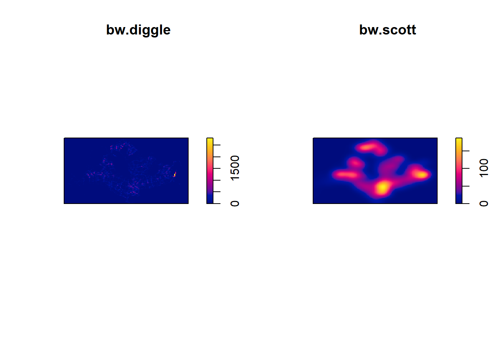

pacman::p_load(sf, tidyverse, tmap, arrow, lubridate, maptools, raster, spatstat, spNetwork, classInt, viridis)1.0 Getting Started
2.0 Spatial Data Wrangling
2.1 Importing the spatial data
Aspatial Data
grab0 <- read_parquet("../../data/TakeHome/TakeHome_01/aspatial/part-00000.parquet")
grab1 <- read_parquet("../../data/TakeHome/TakeHome_01/aspatial/part-00001.parquet")
grab2 <- read_parquet("../../data/TakeHome/TakeHome_01/aspatial/part-00002.parquet")
grab3 <- read_parquet("../../data/TakeHome/TakeHome_01/aspatial/part-00003.parquet")
grab4 <- read_parquet("../../data/TakeHome/TakeHome_01/aspatial/part-00004.parquet")
grab5 <- read_parquet("../../data/TakeHome/TakeHome_01/aspatial/part-00005.parquet")
grab6 <- read_parquet("../../data/TakeHome/TakeHome_01/aspatial/part-00006.parquet")
grab7 <- read_parquet("../../data/TakeHome/TakeHome_01/aspatial/part-00007.parquet")
grab8 <- read_parquet("../../data/TakeHome/TakeHome_01/aspatial/part-00008.parquet")
grab9 <- read_parquet("../../data/TakeHome/TakeHome_01/aspatial/part-00009.parquet")Geospatial Data
roadMe <- st_read("../../data/TakeHome/TakeHome_01/geospatial",
layer = "gis_osm_roads_free_1")
head(roadMe, n=3)islandMe <- st_read("../../data/TakeHome/TakeHome_01/geospatial/MasterPlan2019SubzoneBoundaryNoSeaKML.kml")
head(islandMe, n=3)2.2 Data Pre-Processing
road_df <- roadMe[!(is.na(roadMe$name)), ]
island_df <- islandMe[!(is.na(islandMe$geometry)), ]merged_data <- bind_rows(grab0, grab1, grab2, grab3, grab4, grab5, grab6, grab7, grab8, grab9)merged_data$pingtimestamp <- as_datetime(merged_data$pingtimestamp)origin_df <- merged_data %>%
group_by(trj_id) %>%
arrange(pingtimestamp) %>%
filter(row_number()==1) %>%
mutate(weekday = wday(pingtimestamp,
label=TRUE,
abbr=TRUE),
start_hr = factor(hour(pingtimestamp)),
day = factor(mday(pingtimestamp)))
origin_dfdestination_df <- merged_data %>%
group_by(trj_id) %>%
arrange(desc(pingtimestamp)) %>%
filter(row_number()==1) %>%
mutate(weekday = wday(pingtimestamp,
label=TRUE,
abbr=TRUE),
end_hr = factor(hour(pingtimestamp)),
day = factor(mday(pingtimestamp)))
destination_dfroad_df <- read_rds("../../data/TakeHome/TakeHome_01/rds/road_df.rds")
island_df <- read_rds("../../data/TakeHome/TakeHome_01/rds/island_df.rds")origin_df <- read_rds("../../data/TakeHome/TakeHome_01/rds/origin_df.rds")
destination_df <- read_rds("../../data/TakeHome/TakeHome_01/rds/destination_df.rds")
Note
Using the crs info function to retrieve the referencing system information of these geospatial data.
crs_info1 <- st_crs(road_df)
crs_info2 <- st_crs(island_df)
crs_info1Coordinate Reference System:
User input: WGS 84
wkt:
GEOGCRS["WGS 84",
DATUM["World Geodetic System 1984",
ELLIPSOID["WGS 84",6378137,298.257223563,
LENGTHUNIT["metre",1]]],
PRIMEM["Greenwich",0,
ANGLEUNIT["degree",0.0174532925199433]],
CS[ellipsoidal,2],
AXIS["latitude",north,
ORDER[1],
ANGLEUNIT["degree",0.0174532925199433]],
AXIS["longitude",east,
ORDER[2],
ANGLEUNIT["degree",0.0174532925199433]],
ID["EPSG",4326]]crs_info2Coordinate Reference System:
User input: WGS 84
wkt:
GEOGCRS["WGS 84",
DATUM["World Geodetic System 1984",
ELLIPSOID["WGS 84",6378137,298.257223563,
LENGTHUNIT["metre",1]]],
PRIMEM["Greenwich",0,
ANGLEUNIT["degree",0.0174532925199433]],
CS[ellipsoidal,2],
AXIS["geodetic latitude (Lat)",north,
ORDER[1],
ANGLEUNIT["degree",0.0174532925199433]],
AXIS["geodetic longitude (Lon)",east,
ORDER[2],
ANGLEUNIT["degree",0.0174532925199433]],
ID["EPSG",4326]]
Note
Preparing the following geospatial data layer in sf tibble data.frames.
Road layer within Singapore excluding outer islands.
tibble1 <- as_tibble(road_df)
tibble1# A tibble: 317,780 × 11
osm_id code fclass name ref oneway maxspeed layer bridge tunnel
<chr> <int> <chr> <chr> <chr> <chr> <int> <dbl> <chr> <chr>
1 4386520 5113 primary Orchard … <NA> F 50 0 F F
2 4578273 5114 secondary Jalan Bu… <NA> F 0 0 F F
3 4579495 5122 residential Jalan Na… <NA> B 0 0 F F
4 4579533 5122 residential Persiara… <NA> B 0 0 F F
5 4579534 5122 residential Jalan Ce… <NA> B 0 0 F F
6 4579536 5122 residential Changkat… <NA> F 0 0 F F
7 4585475 5122 residential Jalan Ha… <NA> F 0 0 F F
8 4585480 5122 residential Jalan Be… <NA> F 0 0 F F
9 4585482 5122 residential Jalan Be… <NA> F 0 0 F F
10 4661703 5122 residential Jalan 1/… <NA> B 0 0 F F
# ℹ 317,770 more rows
# ℹ 1 more variable: geometry <LINESTRING [°]>Singapore boundary layer excluding outer islands
tibble2 <- as_tibble(island_df)
tibble2# A tibble: 332 × 3
Name Description geometry
<chr> <chr> <MULTIPOLYGON [°]>
1 kml_1 "<center><table><tr><th colspan='2' align='… Z (((103.8145 1.282387 0…
2 kml_2 "<center><table><tr><th colspan='2' align='… Z (((103.8221 1.280494 0…
3 kml_3 "<center><table><tr><th colspan='2' align='… Z (((103.8438 1.285079 0…
4 kml_4 "<center><table><tr><th colspan='2' align='… Z (((103.8496 1.284119 0…
5 kml_5 "<center><table><tr><th colspan='2' align='… Z (((103.8525 1.286166 0…
6 kml_6 "<center><table><tr><th colspan='2' align='… Z (((103.8486 1.282317 0…
7 kml_7 "<center><table><tr><th colspan='2' align='… Z (((103.8311 1.287163 0…
8 kml_8 "<center><table><tr><th colspan='2' align='… Z (((103.8589 1.278739 0…
9 kml_9 "<center><table><tr><th colspan='2' align='… Z (((103.8283 1.287235 0…
10 kml_10 "<center><table><tr><th colspan='2' align='… Z (((103.8552 1.28322 0,…
# ℹ 322 more rows
Note
Changing the referencing system to Singapore national projected coordinate system.
road_sf <- st_transform(road_df, crs = 3414)
island_sf <- st_transform(island_df, crs = 3414)listings_sf <- st_as_sf(origin_df,
coords = c("rawlng", "rawlat"),
crs=4326) %>%
st_transform(crs = 3414)
glimpse(listings_sf)Rows: 28,000
Columns: 11
Groups: trj_id [28,000]
$ trj_id <chr> "70895", "21926", "47498", "18103", "41322", "64813", "8…
$ driving_mode <chr> "car", "car", "car", "car", "car", "car", "car", "car", …
$ osname <chr> "android", "android", "ios", "android", "android", "ios"…
$ pingtimestamp <dttm> 2019-04-08 00:09:26, 2019-04-08 00:09:48, 2019-04-08 00…
$ speed <dbl> 9.9546840, 11.0183750, 18.5645161, 0.4040553, 17.9400000…
$ bearing <int> 111, 75, 307, 159, 232, 106, 213, 179, 211, 107, 308, 29…
$ accuracy <dbl> 4.000, 4.000, 8.000, 3.000, 3.900, 10.000, 10.000, 4.000…
$ weekday <ord> Mon, Mon, Mon, Mon, Mon, Mon, Mon, Mon, Mon, Mon, Mon, M…
$ start_hr <fct> 0, 0, 0, 0, 0, 0, 0, 0, 0, 0, 0, 0, 0, 0, 0, 0, 0, 0, 0,…
$ day <fct> 8, 8, 8, 8, 8, 8, 8, 8, 8, 8, 8, 8, 8, 8, 8, 8, 8, 8, 8,…
$ geometry <POINT [m]> POINT (20933.84 40231.63), POINT (31257.84 30407.3…island_sf <- st_zm(island_sf)sf_df <- st_as_sf(road_sf, wkt = "geometry")
roads_in_singapore <- st_intersection(sf_df, island_sf)2.3 Mapping the geospatial data sets
Note
After checking the referencing system of each geospatial data data frame, it is also useful for us to plot a map to show their spatial patterns.
roads_in_singapore <- st_transform(roads_in_singapore, crs = 3414)Grab Taxi Location Points
tmap_mode("plot")
tm_shape(listings_sf) +
tm_dots()Master Plan 2019 Planning Subzone Boundary with Grab Taxi Location Points
tm_shape(island_sf) +
tm_polygons() +
tm_shape(listings_sf) +
tm_dots()
#tm_shape(island_sf) +
# tm_polygons() +
#tm_shape(roads_in_singapore) +
# tm_dots()3.0 Geospatial Data wrangling
3.1 Converting sf data frames to sp’s Spatial* class
Note
The code chunk below uses as_Spatial() of sf package to convert the three geospatial data from simple feature data frame to sp’s Spatial* class.
island <- as_Spatial(island_sf)
listings <- as_Spatial(listings_sf)
road <- as_Spatial(roads_in_singapore)road_as <- read_rds("../../data/TakeHome/TakeHome_01/rds/as_road_df.rds")
island_as <- read_rds("../../data/TakeHome/TakeHome_01/rds/as_island_df.rds")
listings_as <- read_rds("../../data/TakeHome/TakeHome_01/rds/as_listings_df.rds")island_asclass : SpatialPolygonsDataFrame
features : 332
extent : 2667.538, 56396.44, 15748.72, 50256.33 (xmin, xmax, ymin, ymax)
crs : +proj=tmerc +lat_0=1.36666666666667 +lon_0=103.833333333333 +k=1 +x_0=28001.642 +y_0=38744.572 +ellps=WGS84 +towgs84=0,0,0,0,0,0,0 +units=m +no_defs
variables : 2
names : Name, Description
min values : kml_1, <center><table><tr><th colspan='2' align='center'><em>Attributes</em></th></tr><tr bgcolor="#E3E3F3"> <th>SUBZONE_NO</th> <td>1</td> </tr><tr bgcolor=""> <th>SUBZONE_N</th> <td>ANAK BUKIT</td> </tr><tr bgcolor="#E3E3F3"> <th>SUBZONE_C</th> <td>BTSZ01</td> </tr><tr bgcolor=""> <th>CA_IND</th> <td>N</td> </tr><tr bgcolor="#E3E3F3"> <th>PLN_AREA_N</th> <td>BUKIT TIMAH</td> </tr><tr bgcolor=""> <th>PLN_AREA_C</th> <td>BT</td> </tr><tr bgcolor="#E3E3F3"> <th>REGION_N</th> <td>CENTRAL REGION</td> </tr><tr bgcolor=""> <th>REGION_C</th> <td>CR</td> </tr><tr bgcolor="#E3E3F3"> <th>INC_CRC</th> <td>4BAD8B2C9CEBF3F2</td> </tr><tr bgcolor=""> <th>FMEL_UPD_D</th> <td>20191223152313</td> </tr></table></center>
max values : kml_99, <center><table><tr><th colspan='2' align='center'><em>Attributes</em></th></tr><tr bgcolor="#E3E3F3"> <th>SUBZONE_NO</th> <td>9</td> </tr><tr bgcolor=""> <th>SUBZONE_N</th> <td>YISHUN WEST</td> </tr><tr bgcolor="#E3E3F3"> <th>SUBZONE_C</th> <td>YSSZ09</td> </tr><tr bgcolor=""> <th>CA_IND</th> <td>N</td> </tr><tr bgcolor="#E3E3F3"> <th>PLN_AREA_N</th> <td>YISHUN</td> </tr><tr bgcolor=""> <th>PLN_AREA_C</th> <td>YS</td> </tr><tr bgcolor="#E3E3F3"> <th>REGION_N</th> <td>NORTH REGION</td> </tr><tr bgcolor=""> <th>REGION_C</th> <td>NR</td> </tr><tr bgcolor="#E3E3F3"> <th>INC_CRC</th> <td>95C11920195B86C7</td> </tr><tr bgcolor=""> <th>FMEL_UPD_D</th> <td>20191223152313</td> </tr></table></center> road_asclass : SpatialLinesDataFrame
features : 83463
extent : 3620.434, 55604.55, 23099.51, 50154.22 (xmin, xmax, ymin, ymax)
crs : +proj=tmerc +lat_0=1.36666666666667 +lon_0=103.833333333333 +k=1 +x_0=28001.642 +y_0=38744.572 +ellps=WGS84 +towgs84=0,0,0,0,0,0,0 +units=m +no_defs
variables : 12
names : osm_id, code, fclass, name, ref, oneway, maxspeed, layer, bridge, tunnel, Name, Description
min values : 1000098060, 5111, cycleway, 105 Henderson Crescent Lobby Drive-Through, 1, B, 0, -2, F, F, kml_1, <center><table><tr><th colspan='2' align='center'><em>Attributes</em></th></tr><tr bgcolor="#E3E3F3"> <th>SUBZONE_NO</th> <td>1</td> </tr><tr bgcolor=""> <th>SUBZONE_N</th> <td>ANAK BUKIT</td> </tr><tr bgcolor="#E3E3F3"> <th>SUBZONE_C</th> <td>BTSZ01</td> </tr><tr bgcolor=""> <th>CA_IND</th> <td>N</td> </tr><tr bgcolor="#E3E3F3"> <th>PLN_AREA_N</th> <td>BUKIT TIMAH</td> </tr><tr bgcolor=""> <th>PLN_AREA_C</th> <td>BT</td> </tr><tr bgcolor="#E3E3F3"> <th>REGION_N</th> <td>CENTRAL REGION</td> </tr><tr bgcolor=""> <th>REGION_C</th> <td>CR</td> </tr><tr bgcolor="#E3E3F3"> <th>INC_CRC</th> <td>4BAD8B2C9CEBF3F2</td> </tr><tr bgcolor=""> <th>FMEL_UPD_D</th> <td>20191223152313</td> </tr></table></center>
max values : 999921410, 5199, unknown, Zubir Said Drive, TPE, T, 90, 5, T, T, kml_99, <center><table><tr><th colspan='2' align='center'><em>Attributes</em></th></tr><tr bgcolor="#E3E3F3"> <th>SUBZONE_NO</th> <td>9</td> </tr><tr bgcolor=""> <th>SUBZONE_N</th> <td>YISHUN WEST</td> </tr><tr bgcolor="#E3E3F3"> <th>SUBZONE_C</th> <td>YSSZ09</td> </tr><tr bgcolor=""> <th>CA_IND</th> <td>N</td> </tr><tr bgcolor="#E3E3F3"> <th>PLN_AREA_N</th> <td>YISHUN</td> </tr><tr bgcolor=""> <th>PLN_AREA_C</th> <td>YS</td> </tr><tr bgcolor="#E3E3F3"> <th>REGION_N</th> <td>NORTH REGION</td> </tr><tr bgcolor=""> <th>REGION_C</th> <td>NR</td> </tr><tr bgcolor="#E3E3F3"> <th>INC_CRC</th> <td>95C11920195B86C7</td> </tr><tr bgcolor=""> <th>FMEL_UPD_D</th> <td>20191223152313</td> </tr></table></center> listings_asclass : SpatialPointsDataFrame
features : 28000
extent : 3628.243, 49845.23, 25198.14, 49689.64 (xmin, xmax, ymin, ymax)
crs : +proj=tmerc +lat_0=1.36666666666667 +lon_0=103.833333333333 +k=1 +x_0=28001.642 +y_0=38744.572 +ellps=WGS84 +towgs84=0,0,0,0,0,0,0 +units=m +no_defs
variables : 10
names : trj_id, driving_mode, osname, pingtimestamp, speed, bearing, accuracy, weekday, start_hr, day
min values : 10, car, android, 1554682166, -1, 0, 1, Fri, 0, 10
max values : 9984, car, ios, 1555889608, 30.9490566253662, 359, 728, Wed, 9, 9 3.2 Converting the Spatial* class into generic sp format
Note
Since spatstat requires the analytical data in ppp object form. There is no direct way to convert a Spatial* classes into ppp object. We need to convert the Spatial classes* into Spatial object first.
The codes chunk below converts the Spatial* classes into generic sp objects.
island_sp <- as(island_as, "SpatialPolygons")
road_sp <- as(road_as, "SpatialPoints")road_sp <- read_rds("../../data/TakeHome/TakeHome_01/rds/sp_road_df.rds")
island_sp <- read_rds("../../data/TakeHome/TakeHome_01/rds/sp_island_df.rds")island_spclass : SpatialPolygons
features : 332
extent : 2667.538, 56396.44, 15748.72, 50256.33 (xmin, xmax, ymin, ymax)
crs : +proj=tmerc +lat_0=1.36666666666667 +lon_0=103.833333333333 +k=1 +x_0=28001.642 +y_0=38744.572 +ellps=WGS84 +towgs84=0,0,0,0,0,0,0 +units=m +no_defs road_spclass : SpatialPoints
features : 286009
extent : 3620.434, 55604.55, 23099.51, 50154.22 (xmin, xmax, ymin, ymax)
crs : +proj=tmerc +lat_0=1.36666666666667 +lon_0=103.833333333333 +k=1 +x_0=28001.642 +y_0=38744.572 +ellps=WGS84 +towgs84=0,0,0,0,0,0,0 +units=m +no_defs 3.3 Converting the generic sp format into spatstat’s ppp format
Note
Now, we will use as.ppp() function of spatstat to convert the spatial data into spatstat’s ppp object format.
road_ppp <- as(road_sp, "ppp")plot(road_ppp)
summary(road_ppp)Planar point pattern: 286009 points
Average intensity 0.0002033603 points per square unit
*Pattern contains duplicated points*
Coordinates are given to 3 decimal places
i.e. rounded to the nearest multiple of 0.001 units
Window: rectangle = [3620.43, 55604.55] x [23099.51, 50154.22] units
(51980 x 27050 units)
Window area = 1406410000 square unitslistings_ppp <- as.ppp(listings_as)#plot(listings_ppp)summary(listings_ppp)Marked planar point pattern: 28000 points
Average intensity 2.473666e-05 points per square unit
Coordinates are given to 3 decimal places
i.e. rounded to the nearest multiple of 0.001 units
Mark variables: trj_id, driving_mode, osname, pingtimestamp, speed, bearing,
accuracy, weekday, start_hr, day
Summary:
trj_id driving_mode osname
Length:28000 Length:28000 Length:28000
Class :character Class :character Class :character
Mode :character Mode :character Mode :character
pingtimestamp speed bearing
Min. :2019-04-08 00:09:26.00 Min. :-1.000 Min. : 0.0
1st Qu.:2019-04-11 08:48:29.25 1st Qu.: 3.590 1st Qu.: 90.0
Median :2019-04-15 00:08:48.00 Median : 9.945 Median :179.0
Mean :2019-04-14 21:29:59.93 Mean : 9.566 Mean :172.5
3rd Qu.:2019-04-18 10:47:59.25 3rd Qu.:14.550 3rd Qu.:256.0
Max. :2019-04-21 23:33:28.00 Max. :30.949 Max. :359.0
accuracy weekday start_hr day
Min. : 1.000 Sun:3983 9 : 2104 17 : 2012
1st Qu.: 3.900 Mon:3975 10 : 2104 18 : 2008
Median : 6.000 Tue:4008 0 : 1941 12 : 2007
Mean : 7.617 Wed:4016 1 : 1919 9 : 2004
3rd Qu.: 10.000 Thu:4008 8 : 1541 16 : 2004
Max. :728.000 Fri:4002 7 : 1539 13 : 2004
Sat:4008 (Other):16852 (Other):15961
Window: rectangle = [3628.24, 49845.23] x [25198.14, 49689.64] units
(46220 x 24490 units)
Window area = 1131920000 square unitssg_owin <- as(island_sp, "owin")
plot(sg_owin)
glimpse(summary(sg_owin))List of 10
$ xrange : num [1:2] 2668 56396
$ yrange : num [1:2] 15749 50256
$ type : chr "polygonal"
$ area : num 7.85e+08
$ units :List of 3
..$ singular : chr "unit"
..$ plural : chr "units"
..$ multiplier: num 1
..- attr(*, "class")= chr "unitname"
$ areafraction: num 0.423
$ npoly : int 387
$ areas : num [1:387] 442298 411723 587223 39438 188767 ...
$ nvertices : int [1:387] 85 38 227 35 96 59 47 31 17 54 ...
$ nhole : int 13
- attr(*, "class")= chr "summary.owin"3.4 Combining point events object and owin object
In this last step of geospatial data wrangling, we will extract road events that are located within Singapore by using the code chunk below.
Note
Plot the newly derived islandSG_ppp as shown below.
islandSG_ppp_road = road_ppp[sg_owin]
#plot(islandSG_ppp_road)glimpse(summary(islandSG_ppp_road))List of 6
$ is.marked : logi FALSE
$ n : int 285725
$ window :List of 10
..$ xrange : num [1:2] 2668 56396
..$ yrange : num [1:2] 15749 50256
..$ type : chr "polygonal"
..$ area : num 7.85e+08
..$ units :List of 3
.. ..$ singular : chr "unit"
.. ..$ plural : chr "units"
.. ..$ multiplier: num 1
.. ..- attr(*, "class")= chr "unitname"
..$ areafraction: num 0.423
..$ npoly : int 387
..$ areas : num [1:387] 442298 411723 587223 39438 188767 ...
..$ nvertices : int [1:387] 85 38 227 35 96 59 47 31 17 54 ...
..$ nhole : int 13
..- attr(*, "class")= chr "summary.owin"
$ intensity : num 0.000364
$ nduplicated: int 93387
$ rounding : num 3
- attr(*, "class")= chr "summary.ppp"3.5 Handling duplicated points
We can check the duplication in a ppp object by using the code chunk below.
any(duplicated(islandSG_ppp_road))[1] TRUE
Note
To count the number of co-indicence point, we will use the multiplicity() function as shown in the code chunk below.
multiplicity(islandSG_ppp_road)
Note
If we want to know how many locations have more than one point event, we can use the code chunk below.
sum(multiplicity(islandSG_ppp_road) > 1)[1] 165819
Note
The output shows that there are 165061 duplicated point events.
To view the locations of these duplicate point events, we will plot road_as data by using the c
tmap_mode('plot')
tm_shape(road_as) +
tm_dots(alpha=0.4,
size=0.05)
tmap_mode('plot')
tm_shape(listings_as) +
tm_dots(alpha=0.4,
size=0.05)
Note
The solution is use jittering, which will add a small perturbation to the duplicate points so that they do not occupy the exact same space. The code chunk below implements the jittering approach.
road_ppp_jit <- rjitter(road_ppp,
retry=TRUE,
nsim=1,
drop=TRUE)any(duplicated(road_ppp_jit))[1] FALSEislandSG_ppp_road = road_ppp_jit[sg_owin]
plot(islandSG_ppp_road)
islandSG_ppp_grab = listings_ppp[sg_owin]
#plot(islandSG_ppp_grab)glimpse(summary(islandSG_ppp_grab))List of 12
$ is.marked : logi TRUE
$ n : int 28000
$ window :List of 10
..$ xrange : num [1:2] 2668 56396
..$ yrange : num [1:2] 15749 50256
..$ type : chr "polygonal"
..$ area : num 7.85e+08
..$ units :List of 3
.. ..$ singular : chr "unit"
.. ..$ plural : chr "units"
.. ..$ multiplier: num 1
.. ..- attr(*, "class")= chr "unitname"
..$ areafraction: num 0.423
..$ npoly : int 387
..$ areas : num [1:387] 442298 411723 587223 39438 188767 ...
..$ nvertices : int [1:387] 85 38 227 35 96 59 47 31 17 54 ...
..$ nhole : int 13
..- attr(*, "class")= chr "summary.owin"
$ intensity : num 3.57e-05
$ nduplicated : int 0
$ rounding : num 3
$ multiple.marks: logi TRUE
$ marknames : chr [1:10] "trj_id" "driving_mode" "osname" "pingtimestamp" ...
$ is.numeric : logi FALSE
$ marktype : chr "dataframe"
$ is.multitype : logi FALSE
$ marks : 'table' chr [1:7, 1:10] "Length:28000 " "Class :character " "Mode :character " NA ...
..- attr(*, "dimnames")=List of 2
.. ..$ : chr [1:7] "" "" "" "" ...
.. ..$ : chr [1:10] " trj_id" "driving_mode" " osname" "pingtimestamp" ...
- attr(*, "class")= chr "summary.ppp"4.0 Kernel Density Estimation
4.1 Computing kernel density estimation using automatic bandwidth selection method
The code chunk below computes a kernel density by using the following configurations of density() of spatstat:
bw.diggle() automatic bandwidth selection method. Other recommended methods are bw.CvL(), bw.scott() or bw.ppl().
The smoothing kernel used is gaussian, which is the default. Other smoothing methods are: “epanechnikov”, “quartic” or “disc”.
The intensity estimate is corrected for edge effect bias by using method described by Jones (1993) and Diggle (2010, equation 18.9). The default is FALSE.
kde_grab_bw <- density(listings_ppp,
sigma=bw.diggle,
edge=TRUE,
kernel="gaussian") kde_roadSG_bw <- density(road_ppp,
sigma=bw.diggle,
edge=TRUE,
kernel="gaussian") plot(kde_grab_bw)bw1 <- bw.diggle(listings_ppp)
bw1 sigma
10.52992 plot(kde_roadSG_bw)bw2 <- bw.diggle(road_ppp)
bw2 sigma
1.224168 4.2 Rescalling KDE values
In the code chunk below, rescale() is used to covert the unit of measurement from meter to kilometer.
grab_ppp.km <- rescale(listings_ppp, 1000, "km")kde_grab.bw <- density(grab_ppp.km, sigma=bw.diggle, edge=TRUE, kernel="gaussian")
plot(kde_grab.bw)
road_ppp.km <- rescale(road_ppp, 1000, "km")kde_roadSG.bw <- density(road_ppp.km, sigma=bw.diggle, edge=TRUE, kernel="gaussian")
plot(kde_roadSG.bw)
4.3 Working with different automatic badwidth methods
Beside bw.diggle(), there are three other spatstat functions can be used to determine the bandwidth, they are: bw.CvL(), bw.scott(), and bw.ppl().
Let us take a look at the bandwidth return by these automatic bandwidth calculation methods by using the code chunk below.
bw.scott(grab_ppp.km) sigma.x sigma.y
1.5926707 0.9389324 bw.diggle(grab_ppp.km) sigma
0.01052992 kde_grab.scott <- density(grab_ppp.km,
sigma=bw.scott,
edge=TRUE,
kernel="gaussian")
par(mfrow=c(1,2))
plot(kde_grab.bw, main = "bw.diggle")
plot(kde_grab.scott, main = "bw.scott")
bw.scott(road_ppp.km) sigma.x sigma.y
1.090330 0.634362 bw.diggle(road_ppp.km) sigma
0.001224168 kde_roadSG.scott <- density(road_ppp.km,
sigma=bw.scott,
edge=TRUE,
kernel="gaussian")
par(mfrow=c(1,2))
plot(kde_roadSG.bw, main = "bw.diggle")
plot(kde_roadSG.scott, main = "bw.scott")
4.4 Converting KDE output into grid object
gridded_kde_grab_bw <- as.SpatialGridDataFrame.im(kde_grab.bw)
spplot(gridded_kde_grab_bw)gridded_kde_roadSG_bw <- as.SpatialGridDataFrame.im(kde_roadSG.bw)
spplot(gridded_kde_roadSG_bw)4.5 Converting gridded output into raster
Next, we will convert the gridded kernal density objects into RasterLayer object by using raster() of raster package.
kde_kde_grab_bw_raster <- raster(gridded_kde_grab_bw)kde_kde_roadSG_bw_raster <- raster(gridded_kde_roadSG_bw)
Note
Let us take a look at the properties of kde_roadSG_bw_raster RasterLayer.
kde_kde_grab_bw_rasterclass : RasterLayer
dimensions : 128, 128, 16384 (nrow, ncol, ncell)
resolution : 0.3610702, 0.1913398 (x, y)
extent : 3.628243, 49.84523, 25.19814, 49.68964 (xmin, xmax, ymin, ymax)
crs : NA
source : memory
names : v
values : -5.496863e-13, 2808.049 (min, max)kde_kde_roadSG_bw_rasterclass : RasterLayer
dimensions : 128, 128, 16384 (nrow, ncol, ncell)
resolution : 0.4061259, 0.2113649 (x, y)
extent : 3.620434, 55.60455, 23.09951, 50.15422 (xmin, xmax, ymin, ymax)
crs : NA
source : memory
names : v
values : -1.013988e-12, 4997.626 (min, max)
Note
Notice that the crs property is NA.
4.6 Assigning projection systems
Note
The code chunk below will be used to include the CRS information on kde_roadSG_bw_raster RasterLayer.
projection(kde_kde_grab_bw_raster) <- CRS("+init=EPSG:3414")
kde_kde_grab_bw_rasterclass : RasterLayer
dimensions : 128, 128, 16384 (nrow, ncol, ncell)
resolution : 0.3610702, 0.1913398 (x, y)
extent : 3.628243, 49.84523, 25.19814, 49.68964 (xmin, xmax, ymin, ymax)
crs : +proj=tmerc +lat_0=1.36666666666667 +lon_0=103.833333333333 +k=1 +x_0=28001.642 +y_0=38744.572 +ellps=WGS84 +units=m +no_defs
source : memory
names : v
values : -5.496863e-13, 2808.049 (min, max)projection(kde_kde_roadSG_bw_raster) <- CRS("+init=EPSG:3414")
kde_kde_roadSG_bw_rasterclass : RasterLayer
dimensions : 128, 128, 16384 (nrow, ncol, ncell)
resolution : 0.4061259, 0.2113649 (x, y)
extent : 3.620434, 55.60455, 23.09951, 50.15422 (xmin, xmax, ymin, ymax)
crs : +proj=tmerc +lat_0=1.36666666666667 +lon_0=103.833333333333 +k=1 +x_0=28001.642 +y_0=38744.572 +ellps=WGS84 +units=m +no_defs
source : memory
names : v
values : -1.013988e-12, 4997.626 (min, max)
Note
Notice that the crs property is completed.
5.0 Visualising the output in tmap
Note
Finally, we will display the raster in cartographic quality map using tmap package.
tm_shape(kde_kde_grab_bw_raster) +
tm_raster("v") +
tm_layout(legend.position = c("right", "bottom"), frame = FALSE)
tm_shape(kde_kde_roadSG_bw_raster) +
tm_raster("v") +
tm_layout(legend.position = c("right", "bottom"), frame = FALSE)
Note
Using appropriate tmap functions, display the kernel density layers on openstreetmap of Singapore
osm_layer <- qtm(basemaps = "OpenStreetMap", zoom = 12)tmap_mode("plot")
tm_shape(kde_kde_grab_bw_raster) +
tm_raster(style = "cont", palette = "plasma") +
tm_layout(legend.show = TRUE, legend.text.color = "white") +
osm_layertmap_mode("plot")
tm_shape(kde_kde_roadSG_bw_raster) +
tm_raster(style = "cont", palette = "plasma") +
tm_layout(legend.show = TRUE, legend.text.color = "white") +
osm_layer